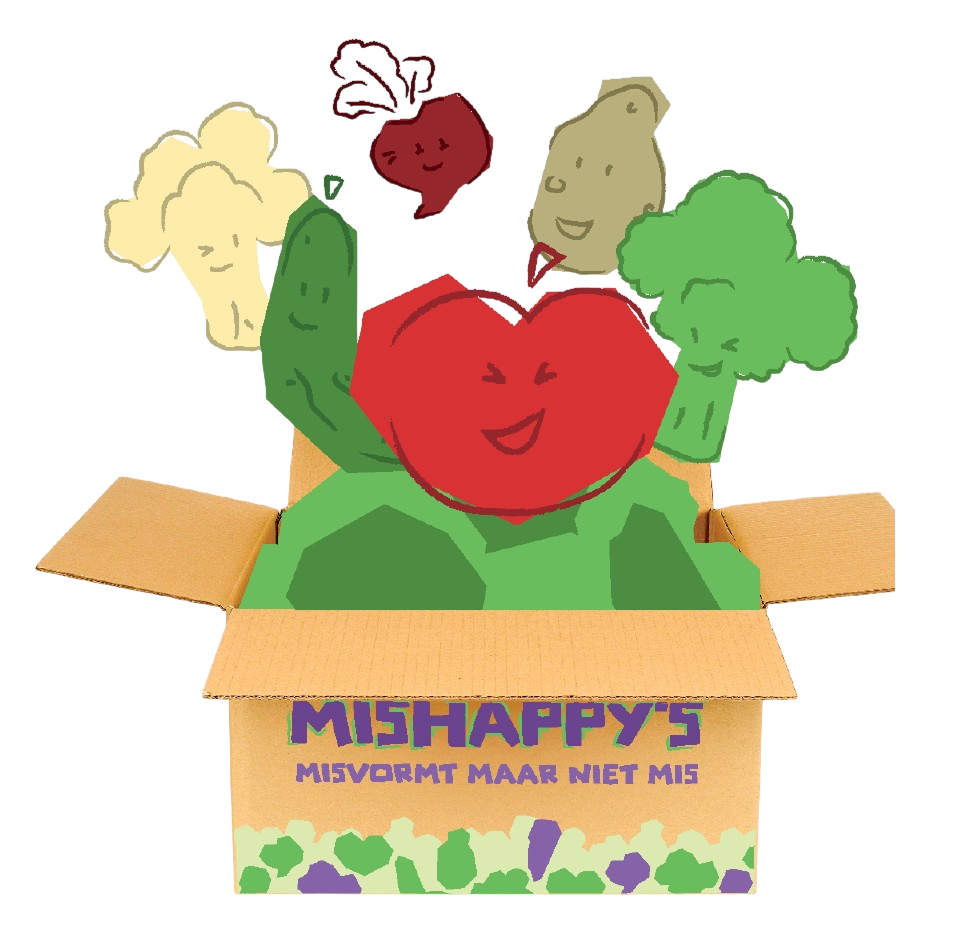
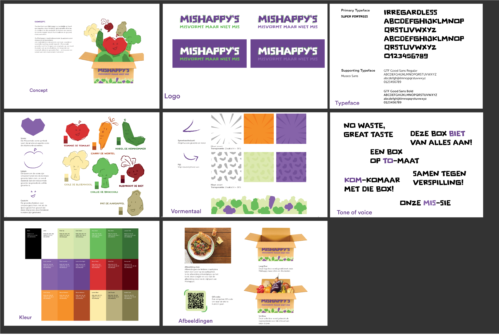
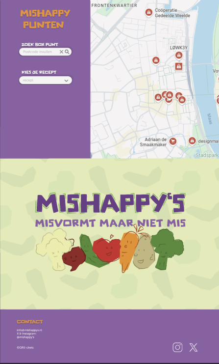
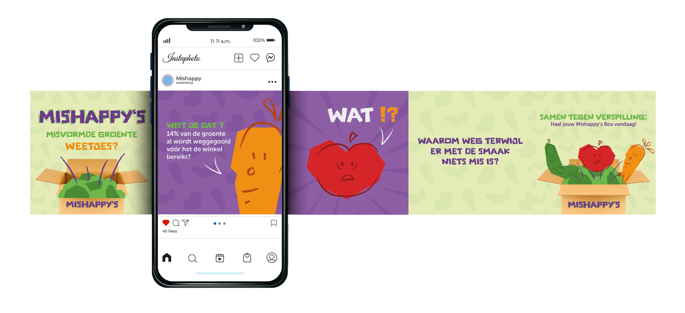

In samenwerking met het Voedingscentrum heb ik in teamverband een campagne ontwikkeld om voedselverspilling tegen te gaan. De focus lag hierbij op het promoten van groenten met een afwijkende vorm via een speciaal ontworpen voedselbox. Voor deze campagne hebben we een volledige crossmediale identiteit neergezet, bestaande uit een website, flyers, posters, social media content en het fysieke verpakkingsontwerp.


In de huisstijl staat de imperfectie van de groenten centraal. De basis van de illustraties is abstract en hoekig opgezet, terwijl verfijnde line-art de herkenbare vorm van de groente terugbrengt. Hiermee symboliseren we dat een afwijkende buitenkant niets afdoet aan de kwaliteit van het product. Dit concept wordt ondersteund door een gevatte tone of voice die een serieuze boodschap combineert met speelse woordgrappen
Mijn rol in dit project richtte zich op het interactie-ontwerp en de visuele interface. Ik heb de website tot in detail uitgewerkt in wireframes en definitieve designs. Hoewel de stap naar de code in deze fase niet is gezet, is er veel aandacht besteed aan de gebruiksvriendelijkheid en een logische user flow, passend bij de doelstellingen van het Voedingscentrum.


etiennehuijdts@gmail.com
+31 6 20265914